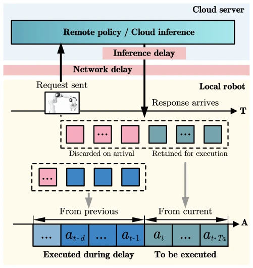
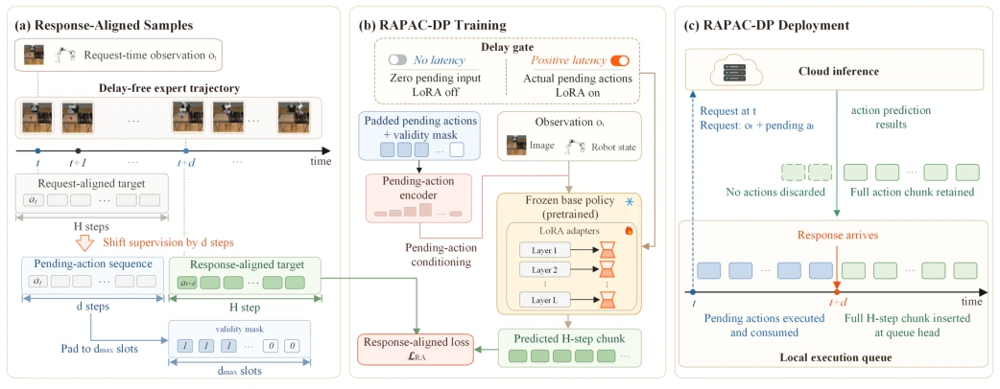
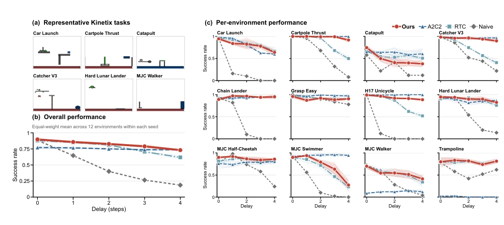
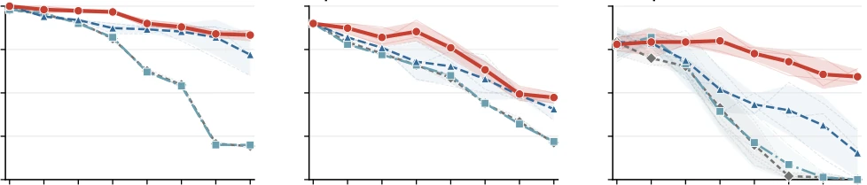

Cloud inference is appealing, yet latency remains a 'fatal poison'. RAPAC-DP's 'pending-action compensation' strategy effectively extends the operational viability of cloud robots by utilizing locally executed actions during the waiting period as conditions, eliminating the need for additional latency data collection while saving resources via LoRA fine-tuning. It also permits lossless rollback to the original policy, which is commendable. However, running entirely in simulation with fixed latency is somewhat idealized; it must pass validation before real-world deployment to avoid failure upon network jitter. Moreover, only fixed latency was tested; how to handle dynamic network fluctuations remains.
Robot local compute is insufficient, making cloud inference inevitable [8]. However, end-to-end latency causes misalignment between observation and execution, resulting in policy failure [11]. Existing methods either stack historical observations to increase dimensionality [12] or rely on world models to predict states [14]. Recent asynchronous action chunking methods such as RTC [16] and A2C2 [17] can alleviate this but fail to explicitly model the impact of actions executed during the waiting period on the state. RAPAC-DP identifies that the core lies in utilizing the pending-action sequence to compensate for latency, thereby avoiding disruption from non-Markovianity.

Fig. 1. Observation–execution misalignment under end-to-end decision delay. While a request is processed remotely, the local controller continues executing queued actions, so the returned chunk remains conditioned on an earlier observation.
The overall process is divided into training and inference. During training, samples are constructed from no-latency trajectories: actions within delay $d$ steps serve as pending-action input, the target sequence starts from $t+d$, requiring no latency demonstrations. During inference, locally executed queue actions are encoded by the Pending-Action Encoder and combined with LoRA adapters injected into the base policy. The Encoder employs a two-layer MLP with Mish activation, invalid tokens are masked, and the LoRA rank is 16. Key innovations: 1) Data construction requires no latency demonstrations; 2) Parameter efficient, only training Encoder+LoRA; 3) Capable of bypassing to restore the base. Generation produces H steps of actions starting from the response arrival moment, ensuring alignment.

Fig. 2. Overview of RAPAC-DP. (a) Delay-free expert trajectories are converted into response-aligned samples. The pending-action sequence provides the conditioning input, and the target action sequence begins at the response time. (b) A pending-action encoder and LoRA adapters provide delay compensation while the base policy remains frozen. When compensation is unnecessary, these modules are disabled, and actions are generated by the frozen base policy alone. (c) During cloud inference, the local controller executes queued actions while awaiting the response. The returned action sequence is then inserted at the head of the execution queue, allowing the complete sequence to remain available for execution.
Fixed latency was tested on RoboMimic (Can, Square, Transport) and Kinetix (12 tasks). Compared against Naive, RTC, and A2C2. RAPAC-DP achieved the highest success rate on RoboMimic at maximum latency, while maintaining 81.4% performance on Kinetix. Ablation studies show that LoRA alone is ineffective and requires pairing with a response alignment target. The pending-action condition restores low-latency performance. Specifically, at maximum latency on RoboMimic, the average success rate is 0.633, far exceeding A2C2.

Fig. 3. Success rates under increasing execution delay on 12 Kinetix tasks. (a) Representative environments. (b) Overall performance, obtained by averaging the 12 environments equally within each seed before computing the across-seed mean. (c) Per-environment performance. RAPAC-DP keeps the compensation pathway enabled at every delay level, including d = 0. For RAPAC-DP, A2C2, and RTC, thick curves show the mean, shaded bands show the standard deviation across three seeds, and pale curves show individual seeds. Naive is evaluated with one seed and therefore has no uncertainty band.

Fig. 4. Success rates under increasing execution delay on RoboMimic: (a) Can, (b) Square, and (c) Transport. All methods use three seeds. For RAPAC-DP, the compensation pathway remains enabled at every delay level, including d = 0. Thick curves and shaded bands denote the mean and sample standard deviation across seeds, respectively; pale curves show individual seeds. Naive denotes the asynchronous baseline defined above.